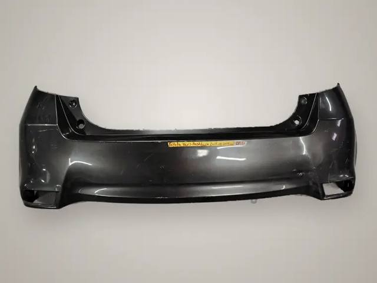

Piezas de carrocería para Toyota Yaris Hatchback
7 piezas disponibles hoy para Toyota Yaris Hatchback, cada una con su foto y su código: defensas traseras (3), faros y lámparas delanteras (1), guardafangos (1), puertas (1). Dinos el año de tu carro y te confirmamos si le sirve.
- Garantía de 3 días
- Foto real de cada pieza
- Efectivo, Yappy o ACH
- Lunes a sábado, 8:00 a. m. a 5:00 p. m.
Defensas traseras para Toyota Yaris Hatchback 3
 DT118Yaris Hatchback2006-13 · original
DT118Yaris Hatchback2006-13 · original DT120Yaris Hatchback2014-17 · original
DT120Yaris Hatchback2014-17 · original
DT121Yaris Hatchback2017-18 · original 159Yaris Hatchback
159Yaris Hatchback GF025Yaris Hatchback
GF025Yaris Hatchback PT036Yaris Hatchback
PT036Yaris Hatchback GFT005Yaris Hatchback
GFT005Yaris Hatchback